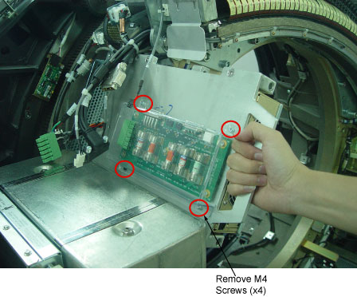
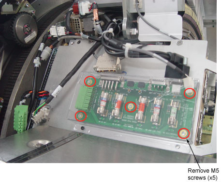

Operating Documentation
Direction 5181178-800, Rev# 16
BrightSpeed Select Service Methods Gen
Module Version 3.0, Version Date 7/25/12
Operating Documentation |
| Required Persons | Preliminary Reqs | Procedure | Finalization |
|---|---|---|---|
| 1 | Not Applicable | 20 mins | 10 mins |
| Last Revised: | May 2012 |
| Item | Qty | Effectivity | Part# | Manufacturer | |
|---|---|---|---|---|---|
| Torque Wrench | 1 | - | - | - | |
| Standard FE Toolkit | 1 | - | - | - | |
| Item | Qty | Effectivity | Part# | Manufacturer | |
|---|---|---|---|---|---|
| Fuse Board | 1 | - | 5342000 | - | |
| ||||
| Electrocution hazard | ||||
| High Voltages present. | ||||
| Use proper lockout/tagout procedures before replacing components. See safety menu of Service Document gui for appropriate procedures. |
| ||||
| CRUSH HAZARD. | ||||
| UNEXPECTED GANTRY ROTATION CAN CAUSE SERIOUS INJURY. | ||||
| Use the gantry rotation lock to lock out gantry rotation. See safety menu of Service Document gui for appropriate procedures. |
| ||||
| Follow ALL required safety and PPE procedures customary for your organization when working on this product. | ||||
| Condition | Reference | Effectivity |
|---|---|---|
Only trained service personnel should service the GE CT Scanner. | - | - |
| ||||
| Follow ALL Electro-Static Discharge procedures. Always use ESD Wrist Strap and grounding cords. The use of a ground Monitor is suggested | ||||
Position the table to its lowest position.
Remove the gantry right side cover.
| ||||
| Always turn OFF the HVDC before the 120VAC. Turning OFF 120VAC power before HVDC power can result in equipment damage. | ||||
Turn OFF Axial Enable, HVDC, and 120VAC switches on the Service Switch panel.
Remove the gantry top and front covers.
Position the DAS at the 12 o'clock position.
Lock the gantry in position using the rotational lock.
Disconnect all cables connectors on the fuse board.
Remove four (4) M4 screws on plastic cover and remove the cover.

Remove five (5) M5 screws on fuse board.

Remove fuse board place into anti-static bag.
Get new Fuse Board from anti-static bag.
Secure fuse board by using four (4) M4 screws and torque to 2.3Nm.
Secure plastic cover by using five (5) M5 screws and torque to 2.3Nm
Reconnect all cables connectors on the fuse board.
Disengage the rotational lock.
Turn on Axial Enable, HVDC, and 120VAC switches.
No finalization steps.